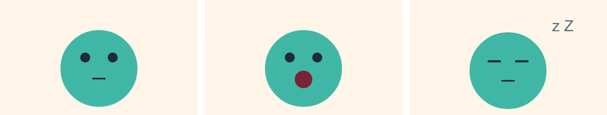

Tutorials
A pet that answers clicks
Make a little pet interactive without writing code: its poses become states, a click on Feed sends it to eat, and a Nap button and any key put it to sleep and wake it, with the States panel.
This page is also a lesson inside Phoenix: choose and start A pet that answers clicks, and Phoenix points at each control as you go. It takes about 10 minutes.
To follow along here instead, download the starting document, interactive-states.fla, and open it with .

This pet has three poses, each on frames with a label on the Labels layer: idle (frames 1 to 12, bobbing), eat (13 to 24, chewing) and sleep (25 to 36, eyes closed). Under it are two buttons, named feedBtn and napBtn in the Properties panel. You will make the pet answer them, without typing any code.
1. Open the States panel
Choose . The panel opens beside the Timeline. It is empty: no states yet.
2. The first state
Click Add State.... The Label list offers the labels that are not states yet. Leave it on idle, leave It on loops, and click OK.
A box called idle appears, with a green arrow into it: the movie starts in this state, playing frames 1 to 12 over and over.
3. Eat and sleep
Click Add State... again and pick eat, with It set to plays once. Then add sleep, set to holds its first frame.
Eating plays its frames once and stops; sleeping stays still on frame 25.
4. Feed it
Each box has a small dot on its right edge. Drag from idle's dot and let go on the eat box. An arrow appears: a transition, from idle to eat.
The arrow says feedBtn is clicked, and the Picked column shows it: When something is clicked, What feedBtn. That is just what we want.
5. Back to idle
Drag from eat's dot onto idle. In the Picked column, set When to Its animation finishes.
Now when the pet has eaten, it goes back to bobbing.
6. Try it
Click Test at the top of the States panel. The movie plays in Test Movie: click Feed and the pet chews, then goes back to idle. Close the Test Movie window when you have seen it.
7. An input
An input is a value the states can go by. Click Add Input under Inputs. In the Picked column, type sleepy as its Name and press Enter. It is an On/off switch, and it starts off.
8. The Nap button turns it on
A listener changes an input when something is clicked or a key is pressed, whatever state is playing. Click Add Listener. In the Picked column, set What to napBtn and Then to turn on.
The list reads When napBtn is clicked: turn on sleepy.
9. Any key turns it off
Click Add Listener again. Set When to A key is pressed, leave Key on Any key, and set Then to turn off.
10. Fall asleep
Drag from idle's dot onto sleep. Set When to Only when an input is set, then Only if to sleepy, is on. Tick Wait for its animation to finish first, so the pet finishes its bob before it nods off.
11. Wake up
Drag from sleep's dot onto idle. Set When to Only when an input is set and Only if to sleepy, is off.

12. Play with it
Click Test. Click Nap: at the end of its bob the pet closes its eyes. Press any key and it wakes. Click Feed and it eats.
What you did
You made the pet interactive with no code: its frame labels became states, the arrows between them transitions, and the Nap button and the keyboard set an input through listeners.
Phoenix wrote the ActionScript for you, on the first frame of a new States layer, between two marked comment lines. That is what plays in Test Movie, in a published SWF or HTML5 page, and in any other app that opens the file. Each change in the panel writes it again, and is one step that takes back.
For everything this tutorial touches on, see Interactive states and ActionScript and Test Movie.